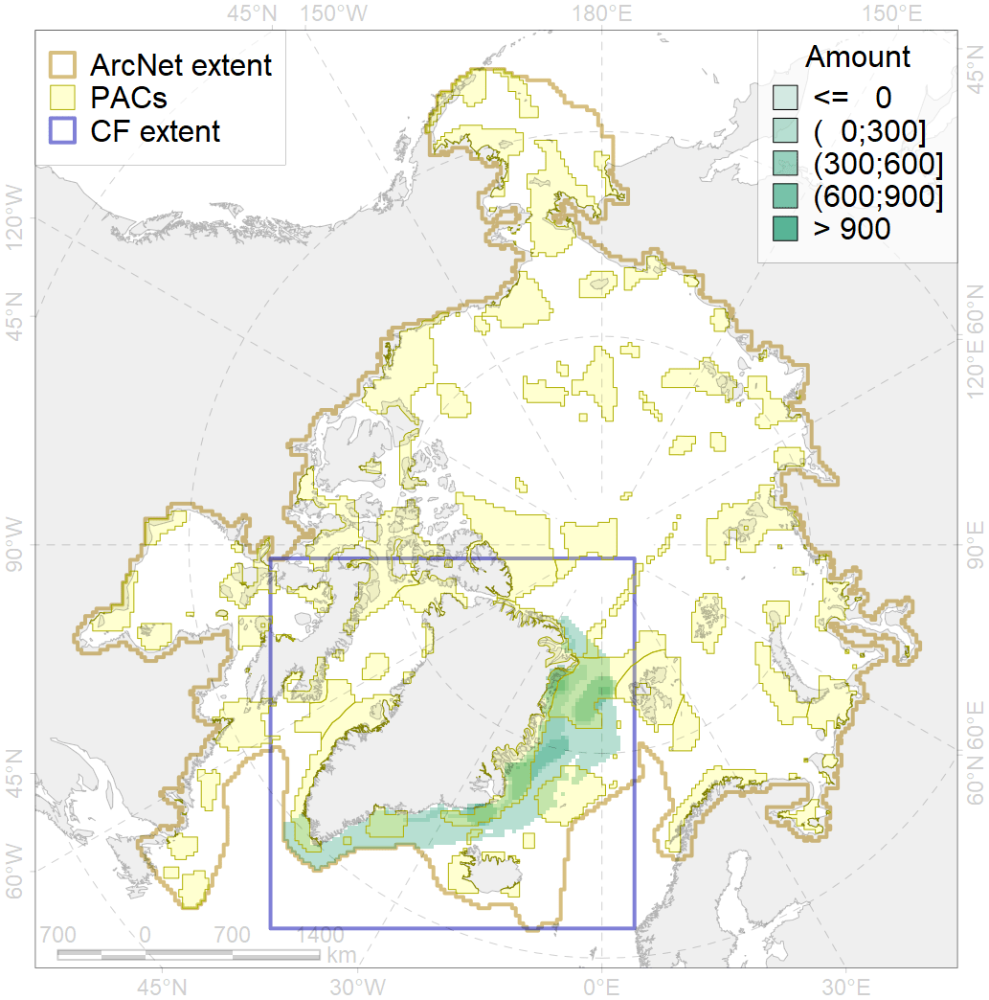
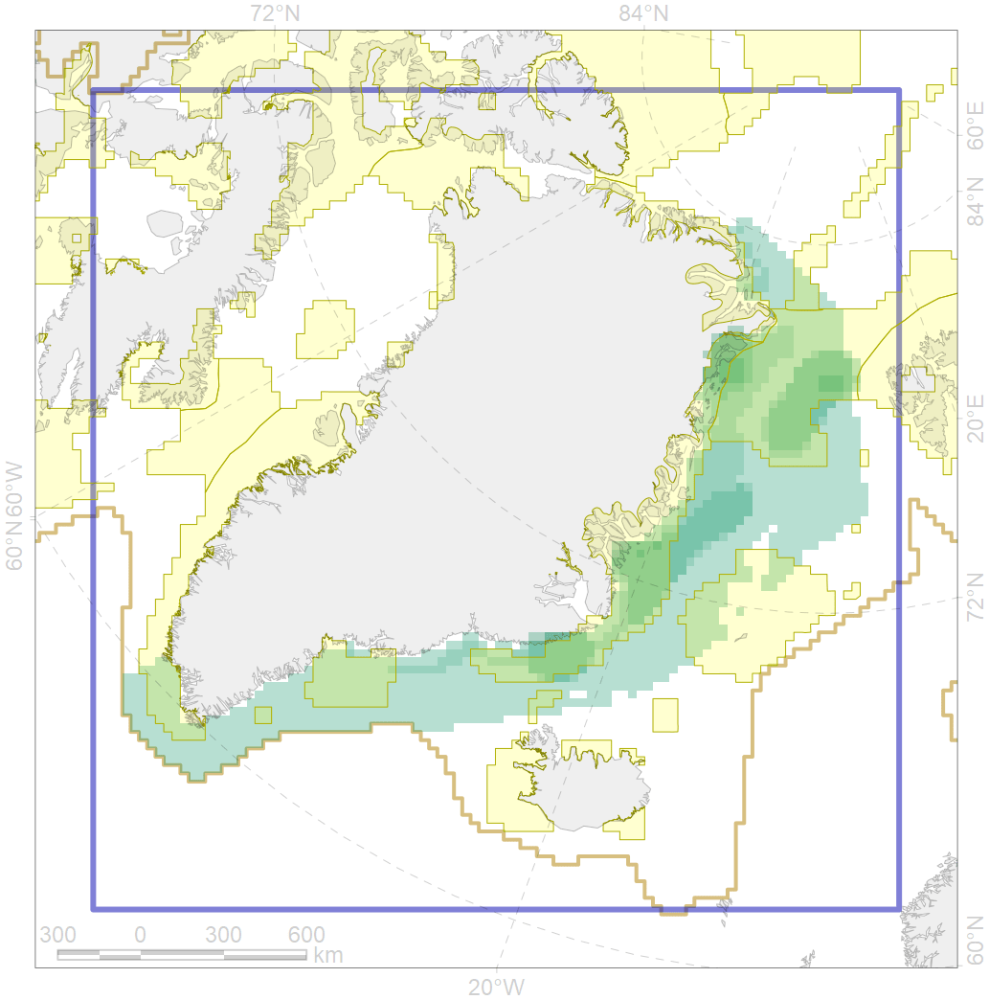

9006

| CF ID | 9006 |
| CF Name | polar bear of the EG (East Greenland) subpopulation distribution |
| Time Period | 1979-2017 |
| Source(s) | Christensen, 2012; Platonov, 2018 |
| Seasonality | January - December |
| Depth Horizon | 0 |
| Methodology | Field data, simulation results. |
| Author Name | Evgeniya Melikhova, Stanislav Belikov |
| Notes | |
| Conservation Target Set in the Scenario | 0.324 |
| Conservation Target Achieved in the Scenario | 0.670 (Scenario: 206.9%) |
| PAC ID | Proportion in the PAC | Contribution to ArcNet Target Achievement | PAC’s Contribution to the Achieved Target |
|---|---|---|---|
| 28 | 0.3% | 0.9% | 0.4% |
| 29 | 33.9% | 100.6% | 48.6% |
| 32 | 32.9% | 92.7% | 44.8% |
| 33 | 0.6% | 1.9% | 0.9% |
| 34 | 0.0% | 0.0% | 0.0% |
| 37 | 0.0% | 0.0% | 0.0% |
| 42 | 1.1% | 2.8% | 1.4% |
| 43 | 0.0% | 0.0% | 0.0% |
| 44 | 0.0% | 0.1% | 0.0% |
| inner | 68.9% | 199.1% | 96.2% |
| outer | 31.1% | 7.9% | 3.8% |